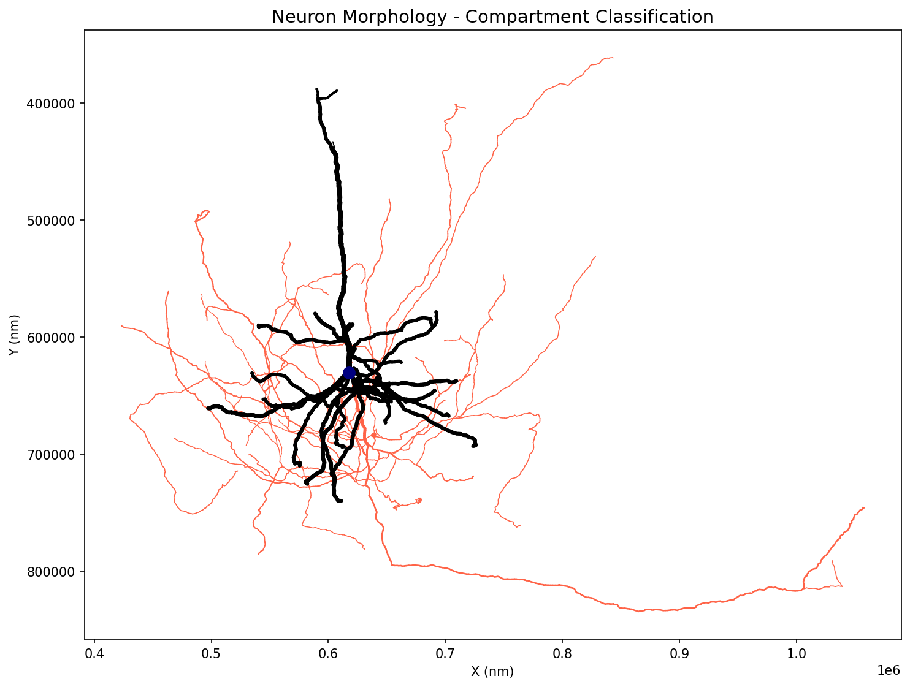
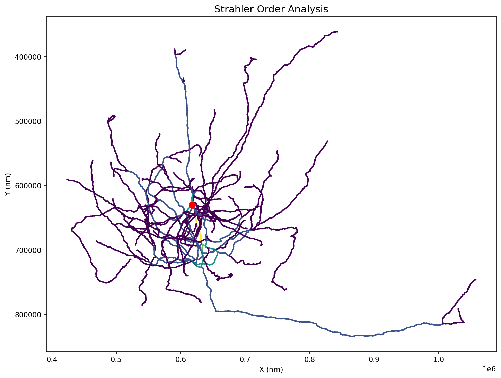
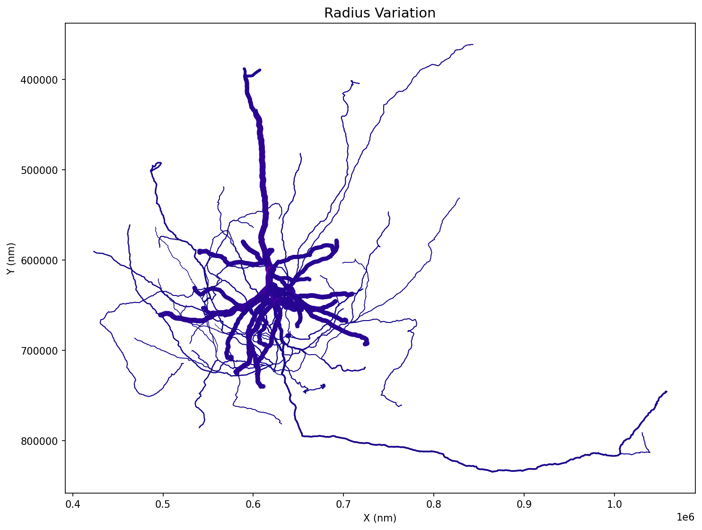
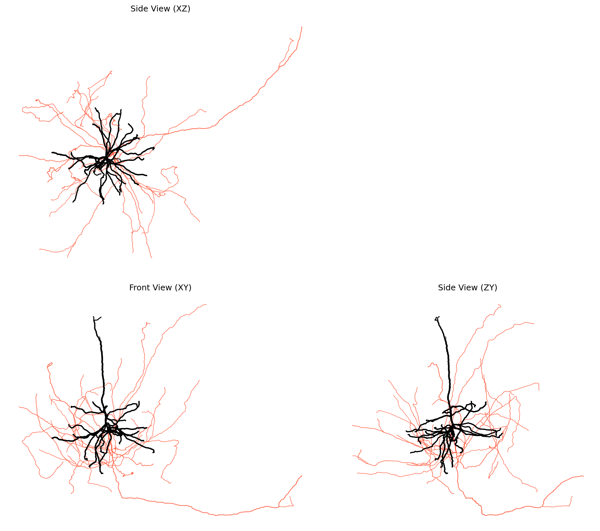
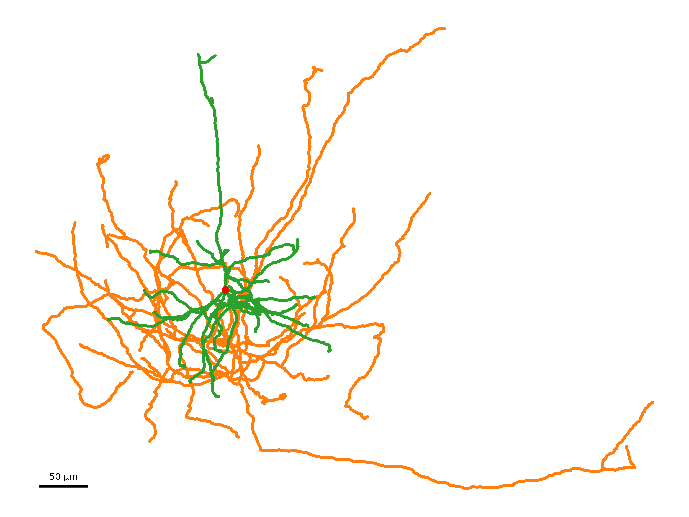
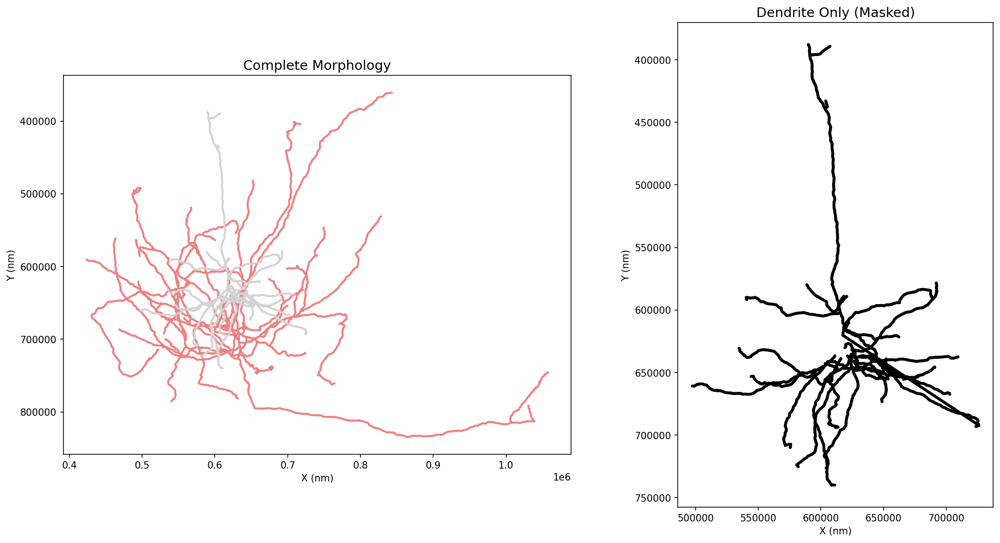

Visualization and Plotting
AI-Generated Documentation
This documentation was generated with assistance from AI. While we strive for accuracy, errors may be present. If you find issues, unclear explanations, or have suggestions for improvement, please report them on GitHub.
Ossify provides 2D visualization capabilities for morphological data analysis and publication-quality figures. Currently, plotting functions are implemented for skeleton layers, with support for other layer types planned for future releases.
Current Plotting Support
Visualization functions currently work with skeleton layers only. Support for plotting meshes, graphs, and annotations is planned for future releases. The plotting API is designed to be extensible to other layer types.
Basic Skeleton Plotting
Simple 2D Projections
import ossify
import matplotlib.pyplot as plt
# Load a real neuron from the example dataset
cell = ossify.load_cell('https://github.com/ceesem/ossify/raw/refs/heads/main/864691135336055529.osy')
# Basic 2D plot
fig, ax = plt.subplots(figsize=(8, 6))
ossify.plot_morphology_2d(cell, projection="xy", ax=ax)
ax.set_title("Basic Skeleton Plot")
plt.show()

Example showing a real neuron with compartment classification: blue (axon), red (dendrite), black (soma).
Different Projections
# Plot different 2D projections
projections = ["xy", "xz", "yz"]
fig, axes = plt.subplots(1, 3, figsize=(15, 5))
for i, proj in enumerate(projections):
ossify.plot_morphology_2d(
cell,
projection=proj,
ax=axes[i]
)
axes[i].set_title(f"Projection: {proj}")
axes[i].set_aspect("equal")
plt.tight_layout()
plt.show()
Styling and Customization
Color-Coded Visualization
# Add algorithmic analysis for visualization
from ossify.algorithms import strahler_number
strahler_vals = strahler_number(cell)
cell.skeleton.add_feature(strahler_vals, 'strahler_number')
# Color by Strahler order (branching complexity)
fig, ax = plt.subplots(figsize=(10, 8))
ossify.plot_morphology_2d(
cell,
projection="xy",
color="strahler_number", # Color by Strahler order
palette="viridis", # Colormap
ax=ax
)
ax.set_title("Strahler Order Analysis")
plt.show()

Strahler order analysis showing branching complexity. Higher orders (yellow) represent main stems, lower orders (purple) represent fine branches.
# Color by continuous variable (radius)
fig, ax = plt.subplots(figsize=(10, 8))
ossify.plot_morphology_2d(
cell,
projection="xy",
color="radius", # Color by radius
palette="plasma", # Colormap
linewidth="radius", # Width also varies with radius
linewidth_norm=(100, 500), # Radius range for normalization
widths=(0.5, 8), # Final line width range
ax=ax
)
ax.set_title("Radius Variation")
plt.show()

Radius variation shown through both color and line width. Thicker, brighter lines indicate larger radii.
Line Width and Transparency
# Variable line width based on radius
fig, ax = plt.subplots(figsize=(10, 8))
ossify.plot_morphology_2d(
cell,
projection="xy",
linewidth="radius", # Width proportional to radius
widths=(1, 10), # Min/max line widths
color="compartment",
palette={"0": "skyblue", "1": "orange"},
ax=ax
)
ax.set_title("Variable Line Width")
plt.show()
# Transparency effects
fig, ax = plt.subplots(figsize=(10, 8))
ossify.plot_morphology_2d(
cell,
projection="xy",
alpha=0.7, # Semi-transparent
color="compartment",
palette={"0": "blue", "1": "red"},
ax=ax
)
ax.set_title("Semi-Transparent Rendering")
plt.show()
Root Markers
# Highlight the root vertex
fig, ax = plt.subplots(figsize=(10, 8))
ossify.plot_morphology_2d(
cell,
projection="xy",
color="compartment",
palette={"0": "blue", "1": "red"},
root_marker=True, # Show root marker
root_size=200, # Root marker size
root_color="gold", # Root marker color
ax=ax
)
ax.set_title("Skeleton with Root Marker")
plt.show()
Multi-View Visualization
Three-Panel Layouts
# Automatic multi-view figure
axes = ossify.plot_cell_multiview(
cell,
layout="three_panel", # xy, xz, zy views
color="compartment",
palette={1: 'navy', 2: 'tomato', 3: 'black'},
linewidth="radius",
linewidth_norm=(100, 500),
widths=(0.5, 3),
units_per_inch=100_000, # Scale factor
despine=True # Clean appearance
)
# axes is a dictionary: {"xy": ax1, "xz": ax2, "zy": ax3}
view_titles = {"xy": "Front View (XY)", "xz": "Side View (XZ)", "zy": "Side View (ZY)"}
for proj, ax in axes.items():
ax.set_title(view_titles[proj])
plt.show()

Three-panel layout showing the same neuron from different angles. This comprehensive view reveals the 3D structure and spatial organization of compartments.
Side-by-Side and Stacked Layouts
# Side-by-side layout (xy | zy)
fig, axes = ossify.plot_cell_multiview(
cell,
layout="side_by_side",
color="radius",
palette="plasma",
units_per_inch=15
)
# Stacked layout (xz over xy)
fig, axes = ossify.plot_cell_multiview(
cell,
layout="stacked",
color="compartment",
palette={"0": "green", "1": "purple"},
units_per_inch=12
)
Advanced Plotting Features
Custom Color Palettes
# Discrete color mapping
compartment_colors = {
0: "#2E86AB", # Blue for dendrite
1: "#A23B72", # Pink for axon
}
fig, ax = plt.subplots(figsize=(10, 8))
ossify.plot_morphology_2d(
cell,
color="compartment",
palette=compartment_colors,
linewidth="radius",
widths=(2, 8),
ax=ax
)
# Continuous colormap with normalization
fig, ax = plt.subplots(figsize=(10, 8))
ossify.plot_morphology_2d(
cell,
color="radius",
palette="coolwarm",
color_norm=(0.5, 2.5), # Custom color range
ax=ax
)
Projection Customization
# Y-axis inversion for image-like coordinates
fig, ax = plt.subplots(figsize=(10, 8))
ossify.plot_morphology_2d(
cell,
projection="xy",
invert_y=True, # Invert y-axis
color="compartment",
palette={"0": "blue", "1": "red"},
ax=ax
)
# Custom projection function
def custom_projection(vertices):
"""Custom projection: rotate and scale."""
angle = np.pi / 4 # 45 degrees
rotation = np.array([
[np.cos(angle), -np.sin(angle)],
[np.sin(angle), np.cos(angle)]
])
xy_coords = vertices[:, [0, 1]] # Extract x, y
rotated = xy_coords @ rotation.T
return rotated * 2 # Scale by 2
fig, ax = plt.subplots(figsize=(10, 8))
ossify.plot_morphology_2d(
cell,
projection=custom_projection,
color="radius",
palette="viridis",
ax=ax
)
ax.set_title("Custom Projection")
Spatial Offsets
# Plot multiple cells with offsets
cells = [cell] # In practice, you'd have multiple cells
fig, ax = plt.subplots(figsize=(12, 8))
offsets = [(0, 0), (30, 0), (60, 0)] # Horizontal spacing
colors = ["blue", "red", "green"]
for i, (cell_to_plot, offset, color) in enumerate(zip(cells * 3, offsets, colors)):
ossify.plot_morphology_2d(
cell_to_plot,
projection="xy",
offset_h=offset[0], # Horizontal offset
offset_v=offset[1], # Vertical offset
color=color,
alpha=0.8,
ax=ax
)
ax.set_title("Multiple Cells with Offsets")
ax.set_aspect("equal")
plt.show()
Publication-Quality Figures
Precise Sizing and Scaling
# Convert to micrometers for better scale
display_cell = cell.transform(lambda x: x / 1000)
display_cell.name = f"{cell.name}_display"
# Create figure with exact physical dimensions
fig, ax = ossify.single_panel_figure(
data_bounds_min=display_cell.skeleton.bbox[0], # Data bounds
data_bounds_max=display_cell.skeleton.bbox[1],
units_per_inch=50, # 50 μm per inch
despine=True, # Clean appearance
dpi=300 # High resolution
)
ossify.plot_morphology_2d(
display_cell,
projection="xy",
color="compartment",
palette={1: '#1f77b4', 2: '#ff7f0e', 3: '#2ca02c'},
linewidth="radius",
linewidth_norm=(0.1, 0.5), # Adjusted for μm scale
widths=(0.5, 4),
root_marker=True,
root_color='red',
ax=ax
)
# Add scale bar
ossify.add_scale_bar(
ax=ax,
length=50, # 50 μm scale bar
position=(0.05, 0.05), # Position as fraction of axes
color="black",
linewidth=3,
feature="50 μm",
fontsize=12
)
plt.savefig("publication_figure.png", dpi=300, bbox_inches="tight")
plt.show()

Publication-quality figure with precise scaling, clean styling, and scale bar. The coordinate system has been converted to micrometers for appropriate scale representation.
Multi-Panel Publication Figures
# Create publication-ready multi-panel figure
fig, axes = ossify.multi_panel_figure(
data_bounds_min=cell.skeleton.bbox[0],
data_bounds_max=cell.skeleton.bbox[1],
units_per_inch=100,
layout="three_panel",
gap_inches=0.3, # Gap between panels
despine=True,
dpi=300
)
# Plot same cell in all views with consistent styling
for proj, ax in axes.items():
ossify.plot_morphology_2d(
cell,
projection=proj,
color="compartment",
palette={"0": "#1f77b4", "1": "#ff7f0e"}, # Professional colors
linewidth="radius",
widths=(1, 4),
root_marker=True,
root_size=100,
root_color="black",
ax=ax
)
# Add scale bar to xy view only
if proj == "xy":
ossify.add_scale_bar(
ax=ax,
length=5,
position=(0.8, 0.05),
feature="5 μm",
fontsize=10
)
plt.savefig("multiview_figure.pdf", dpi=300, bbox_inches="tight")
plt.show()
Working with Real Data
CAVEclient Data Visualization
# Visualize data loaded from CAVEclient
# (Assuming cell loaded with ossify.load_cell_from_client)
if hasattr(cell, 'skeleton') and cell.skeleton is not None:
# Convert from nanometers to micrometers for display
display_cell = cell.transform(lambda x: x / 1000)
display_cell.name = f"{cell.name}_display"
# Plot with appropriate scaling
fig, ax = ossify.single_panel_figure(
data_bounds_min=display_cell.skeleton.bbox[0],
data_bounds_max=display_cell.skeleton.bbox[1],
units_per_inch=50, # 50 μm per inch
despine=True
)
# Color by compartment if available
color_by = "compartment" if "compartment" in display_cell.skeleton.feature_names else None
ossify.plot_morphology_2d(
display_cell,
color=color_by,
palette={"0": "blue", "1": "red"} if color_by else "black",
linewidth="radius" if "radius" in display_cell.skeleton.feature_names else 2,
ax=ax
)
# Add scale bar in micrometers
ossify.add_scale_bar(
ax=ax,
length=50, # 50 μm
position=(0.1, 0.1),
feature="50 μm",
color="black"
)
Algorithm Results Visualization
# Visualize results of morphological analysis
import ossify
# Compute Strahler numbers
strahler = ossify.strahler_number(cell)
cell.skeleton.add_feature(strahler, name="strahler")
# Create figure showing Strahler analysis
fig, axes = plt.subplots(1, 2, figsize=(16, 8))
# Original morphology
ossify.plot_morphology_2d(
cell,
projection="xy",
color="compartment",
palette={"0": "blue", "1": "red"},
linewidth="radius",
widths=(1, 6),
ax=axes[0]
)
axes[0].set_title("Compartment Classification")
# Strahler analysis
ossify.plot_morphology_2d(
cell,
projection="xy",
color="strahler",
palette="viridis",
linewidth=3,
ax=axes[1]
)
axes[1].set_title("Strahler Order")
plt.tight_layout()
plt.show()
Integrating with Analysis Workflows
Before and After Comparison
# Demonstrate masking visualization
fig, axes = plt.subplots(1, 2, figsize=(16, 8))
# Original morphology
ossify.plot_morphology_2d(
cell,
projection="xy",
color='compartment',
palette={1: 'lightblue', 2: 'lightcoral', 3: 'lightgray'},
linewidth=2,
ax=axes[0]
)
axes[0].set_title("Complete Morphology")
# Dendrite only (compartment == 3)
with cell.mask_context('skeleton', cell.skeleton.features['compartment'] == 3) as masked_cell:
ossify.plot_morphology_2d(
masked_cell,
projection="xy",
color='black',
linewidth=3,
ax=axes[1]
)
axes[1].set_title("Dendrite Only (Masked)")
for ax in axes:
ax.set_xfeature("X (nm)")
ax.set_yfeature("Y (nm)")
plt.tight_layout()
plt.show()

Masking visualization showing the complete morphology (left) and filtered dendrite compartment (right). Masking enables focused analysis on specific cellular regions.
Masking Visualization
# Visualize masking results
def plot_masked_comparison(cell, mask, mask_name="Mask"):
"""Show original vs masked data."""
masked_cell = cell.apply_mask("skeleton", mask, as_positional=True)
fig, axes = plt.subplots(1, 2, figsize=(16, 8))
# Original with mask highlighted
colors = ["lightgray" if not m else "red" for m in mask]
ossify.plot_morphology_2d(
cell,
projection="xy",
color=colors,
linewidth=2,
ax=axes[0]
)
axes[0].set_title(f"Original (highlighted: {mask_name})")
# Masked result
ossify.plot_morphology_2d(
masked_cell,
projection="xy",
color="blue",
linewidth=3,
ax=axes[1]
)
axes[1].set_title(f"Masked Result")
plt.tight_layout()
return fig, axes
# Example usage
# quality_mask = cell.skeleton.get_feature("quality") > 0.8
# plot_masked_comparison(cell, quality_mask, "High Quality")
Key Plotting Functions
Core Plotting Functions
ossify.plot_morphology_2d(cell, projection="xy", color=None, palette="coolwarm", ...)- Main 2D plotting functionossify.plot_cell_multiview(cell, layout="three_panel", ...)- Multi-view layouts
Figure Creation
ossify.single_panel_figure(data_bounds_min, data_bounds_max, units_per_inch, ...)- Precise single panelossify.multi_panel_figure(data_bounds_min, data_bounds_max, units_per_inch, layout, ...)- Multi-panel layouts
Enhancements
ossify.add_scale_bar(ax, length, position=(0.05, 0.05), feature=None, ...)- Add scale bars
Projection Options
- Standard projections:
"xy","xz","yz","yx","zx","zy" - Custom projection functions that take vertices and return 2D coordinates
Styling Parameters
color- feature name, array, or single colorpalette- Colormap name or color dictionarylinewidth- feature name, array, or single valuealpha- Transparency (0-1)root_marker- Show root vertex markerinvert_y- Invert y-axis for projections containing 'y'
Plotting Best Practices
- Use
units_per_inchfor consistent scaling across figures - Apply coordinate conversions (nm → μm) for appropriate scale bars
- Use
despine=Truefor clean publication figures - Set high DPI (300+) for publication-quality output
- Color by meaningful biological properties (compartment, Strahler order)
- Add scale bars with appropriate units for the data scale
Future Plotting Support
The plotting framework is designed to be extensible. Future releases will add support for:
- Mesh surface rendering
- Graph network visualization
- Annotation scatter plots
- 3D interactive visualization
- Animation capabilities